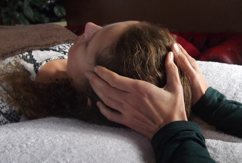
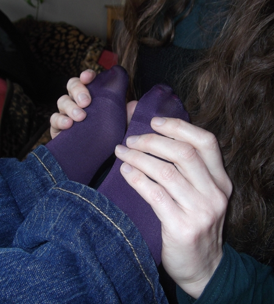

About Craniosacral Therapy
Craniosacral therapy has its roots in the innovations of the early experimental osteopaths and is now one of the most successful and fastest growing approaches to mind-body healing.
As a CS therapist we are trained to feel the quality of the central nervous system (CNS) and the relationship of the CNS to the rest of the body; how it manifests throughout the body and where there may be sites of inertia created through trauma or illness at a structural or emotional level.
Through attentive listening we are given hands-on access to the interface between body, mind and emotions.
The process of listening has the effect on the CNS to begin to change and heal. Our body has its own intelligence as to how it wants to be and the therapist and client work to facilitate this happening. Much deep work is done within the confines of an anatomically defined physiological system.
This powerful and profound therapy can treat anxiety and stress-related symptoms, trauma, medical conditions and physical injuries.
More information on Craniosacral therapy can be found on the Craniosacral Therapy Association of the UK's website.